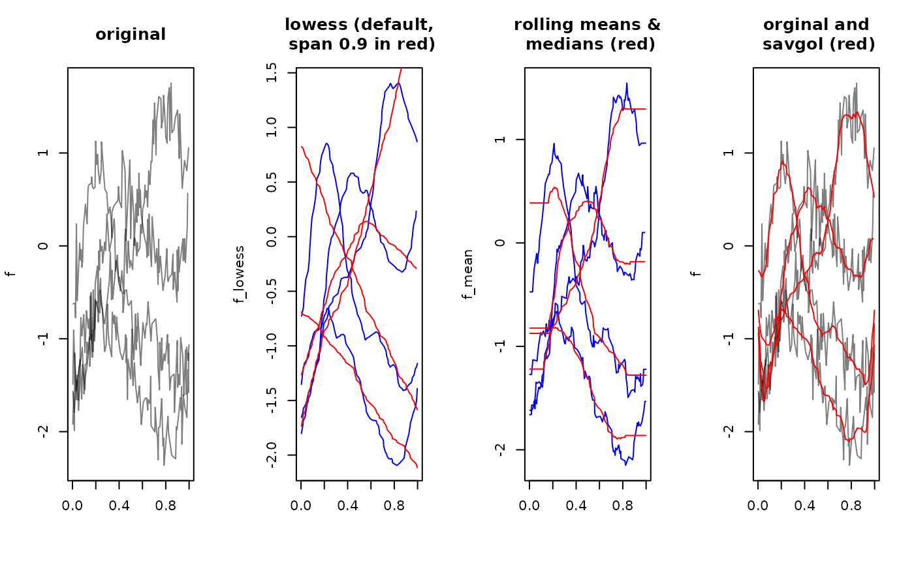

Apply running means or medians, lowess or Savitzky-Golay
filtering to smooth functional data. This does nothing for tfb-objects,
which should be smoothed by using a smaller basis / stronger penalty.
Usage
tf_smooth(x, ...)
# S3 method for tfb
tf_smooth(x, ...)
# S3 method for tfd
tf_smooth(x, method = c("lowess", "rollmean", "rollmedian", "savgol"), ...)Arguments
- x
a
tfobject containing functional data- ...
arguments for the respective
method. See Details.- method
one of "lowess" (see
stats::lowess()), "rollmean", "rollmedian" (seezoo::rollmean()) or "savgol" (seepracma::savgol())
Value
a smoothed version of the input. For some methods/options, the smoothed functions may be shorter than the original ones (at both ends).
Details
tf_smooth.tfd overrides/automatically sets some defaults of the
used methods:
lowessuses a span parameter off= 0.15 (instead of 0.75) by default.rollmean/medianuse a window size ofk= $<$number of grid points$>$/20 (i.e., the nearest odd integer to that) and setsfill= "extend"(i.e., constant extrapolation to replace missing values at the extremes of the domain) by default. Usefill= NAforzoo's default behavior of shortening the smoothed series.savgoluses a window size ofk= $<$number of grid points$>$/10 (i.e., the nearest odd integer to that).
Examples
library(zoo)
#>
#> Attaching package: ‘zoo’
#> The following objects are masked from ‘package:base’:
#>
#> as.Date, as.Date.numeric
library(pracma)
f <- tf_sparsify(tf_jiggle(tf_rgp(4, 201, nugget = 0.05)))
f_lowess <- tf_smooth(f, "lowess")
#> using f = 0.15 as smoother span for lowess
# these methods ignore the distances between arg-values:
f_mean <- tf_smooth(f, "rollmean")
#> Warning: non-equidistant arg-values in ‘f’ ignored by rollmean.
#> using k = 5 observations for rolling data window.
#> setting fill = 'extend' for start/end values.
f_median <- tf_smooth(f, "rollmean", k = 31)
#> Warning: non-equidistant arg-values in ‘f’ ignored by rollmean.
#> setting fill = 'extend' for start/end values.
f_sg <- tf_smooth(f, "savgol", fl = 31)
#> Warning: non-equidistant arg-values in ‘f’ ignored by savgol.
layout(t(1:4))
plot(f, points = FALSE, main = "original")
plot(f_lowess,
points = FALSE, col = "blue", main = "lowess (default,\n span 0.9 in red)"
)
lines(tf_smooth(f, "lowess", f = 0.9), col = "red", alpha = 0.2)
plot(f_mean,
points = FALSE, col = "blue", main = "rolling means &\n medians (red)"
)
lines(f_median, col = "red", alpha = 0.2) # note constant extrapolation at both ends!
plot(f, points = FALSE, main = "orginal and\n savgol (red)")
lines(f_sg, col = "red")
